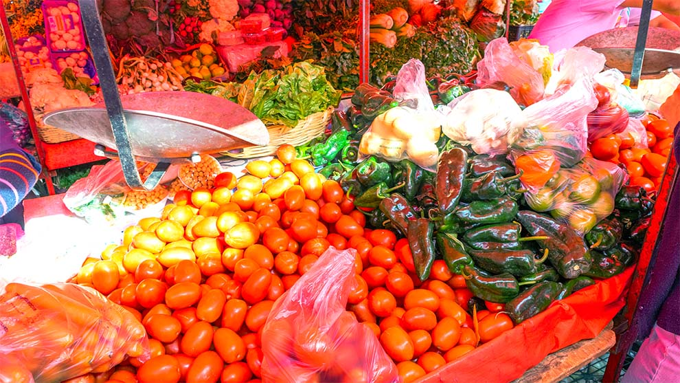

Disponible hoy
ORGANIZACIÓN DEL TIANGUIS · ABIERTO HOY
Tianguis
de Tepito.
Un punto de encuentro comercial del Barrio de Tepito, en Cuauhtémoc. Aquí reunimos los puestos que deciden hacer visible su oferta del día.
8:00–17:00 horario dominical1 puesto conectado43 kg inventario compartido
Mercado tradicional
conectado a BARRIO
PUESTOS CONECTADOS
Quienes hoy
comparten su oferta.
Éste es el perfil del tianguis. Cada puesto conserva su propia información, inventario y promociones dentro de la red BARRIO.
🍅● Inventario disponible
PUESTO 01 · ACTUALIZADO POR WHATSAPP
Frutas y verduras Don Chucky
Frutas y verduras · Tianguis de Tepito

Foto recibida y analizada por el asistente de WhatsApp · demo
Disponible hoy
Disponible hoy
✦
Promoción de Don Chucky
Llévate 2 kg de tomate y recibe limón a precio de barrio.
INTELIGENCIA PARA LA CIUDAD
Más visibilidad para
el comercio que ya existe.
Cuando los tianguistas comparten inventario, las personas encuentran productos cerca y la ciudad puede leer actividad agregada, respetando a cada negocio.
Explorar más tianguis →